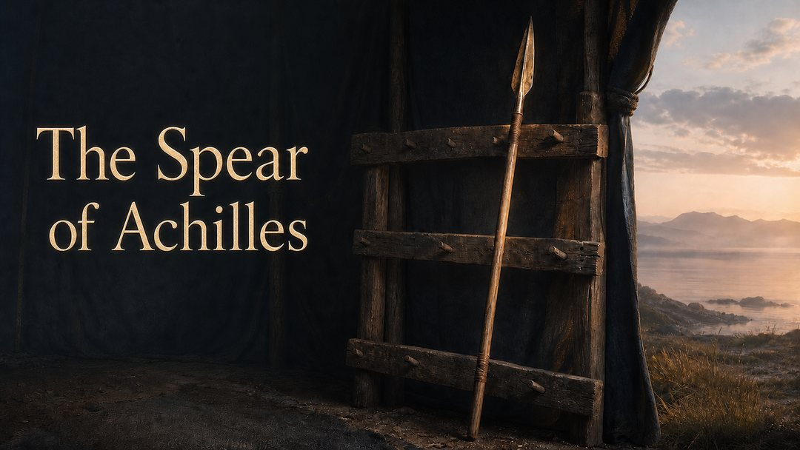
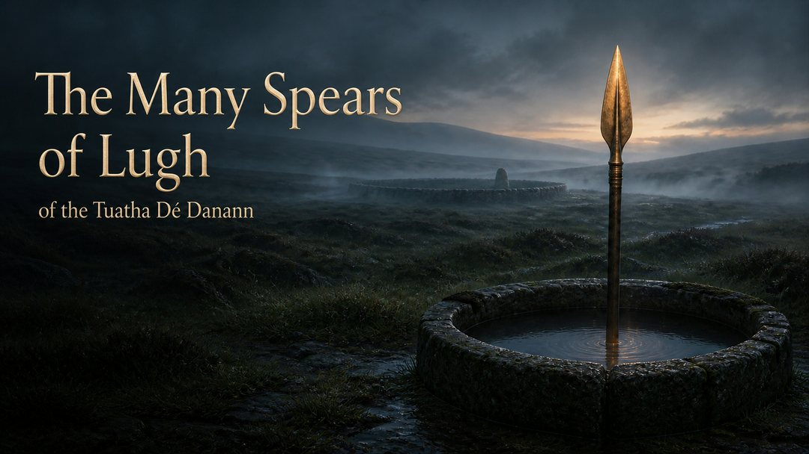
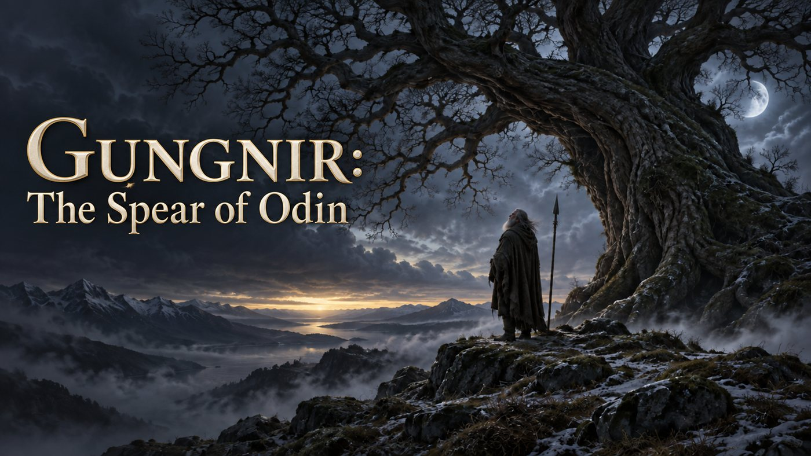
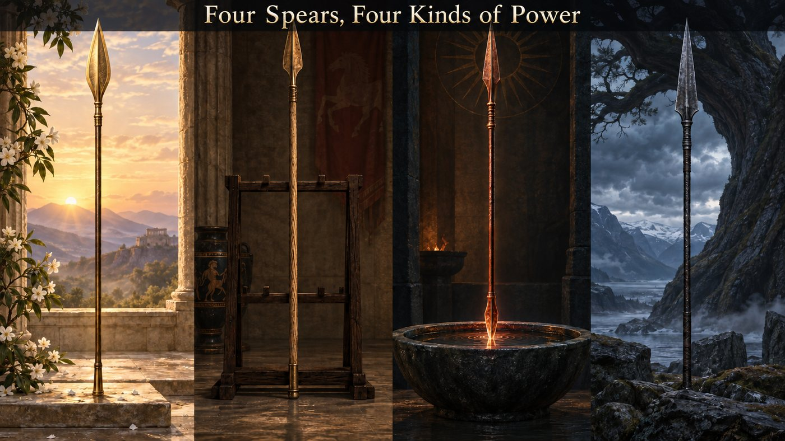
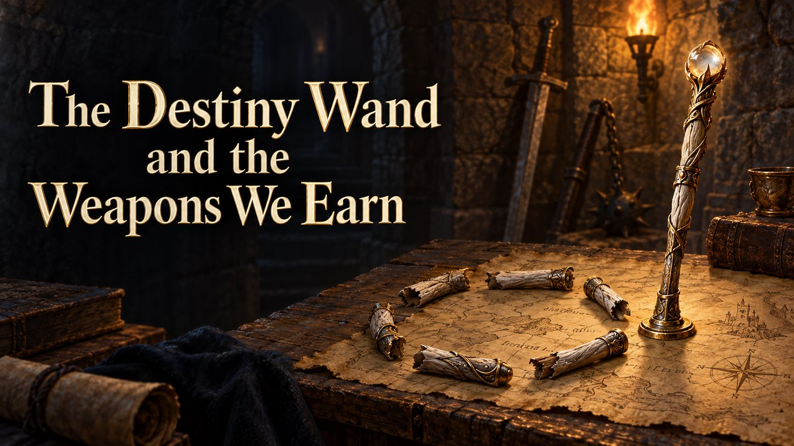

The Vel: Murugan's Spear and the Point of Divine Clarity
We are beginning a new series about mythic spears.
While working on Lathmar: The Fallen Depths, I wanted to introduce the Spear of Destiny from Bard's Tale. In Lathmar's story, it was given to humankind as Gungnir, the spear of Norse legend. Humanity then carried it into the Sigil of Corruption, together with sacred wood, elven mithril, and dwarven adamantium.
But the more I explored Gungnir out of personal curiosity, the more spears I discovered in the myths of our own world.
These are not merely weapons. They are symbols: of protection, inheritance, sacrifice, divine authority, wisdom, and the price of power. Over the coming articles, I want to introduce you to mythic weapons that may be new to you-and to the stories and cultures that gave them meaning.
We begin not in the North, but with the Vel: the sacred spear of Murugan.
A spear is a simple thing: a shaft, a point, a direction.
But in the stories of Murugan, the Tamil god of youth, war, beauty, and protection, the Vel is never merely a weapon. It is a divine sign. It protects, pierces illusion, and turns a chaotic world back toward balance. For millions of devotees, it remains a living sacred emblem rather than a relic of a vanished mythology.
This is the first article in a series about mythic spears: weapons that do not simply make their bearers stronger, but reveal what those bearers are for.
A weapon given for an impossible fight
The demon Surapadman has become a force of disorder. In later Tamil and Hindu retellings, he and his allies threaten gods and worlds alike; ordinary force cannot end the conflict. Murugan, the youthful son of Shiva and Parvati, is the one chosen to confront him.
Then comes the Vel.
In many familiar retellings, Parvati gives the spear to her son before the battle. Armed with it, Murugan meets Surapadman and defeats him-not simply by killing a monster, but by transforming the violence of the encounter. One version of the story has the demon take the form of a great tree before being split apart. From that final confrontation arise Murugan's familiar companions: the peacock he rides and the rooster emblem he carries.
It is a vivid battle story. Yet the Vel's real force lies in what it does after the battle: it makes disorder answerable to a higher order.
Who bears the Vel-and why Murugan?
Murugan is known by many names across South Asia and the Tamil diaspora: Murugan, Skanda, Kartikeya, Subrahmanya, and more. Those names carry overlapping, but not identical, traditions. In Tamil religious life, Murugan has a particularly deep connection to hills, youth, warfare, desire, protection, and the landscape of Tamil culture.
That matters because the Vel belongs to Murugan in a way that a generic sword could not. It is narrow, direct, and unmistakably purposeful. It does not suggest a warrior who overwhelms everything around him. It suggests a figure who finds the one point where a crisis must be met.
Murugan is often portrayed as young, but his youth is not naivety. It is alertness: the power to act before fear, pride, or confusion turn a problem into a catastrophe. The Vel becomes the visible form of that quality. It is not brute force. It is decisive insight.
Origin, power, and the stories around the spear
The Vel's history is older and richer than any single "origin scene." Murugan appears in early Tamil literature, including Sangam poetry, where he is associated with the mountainous kurinji landscape and with a distinctive Tamil religious world. Over centuries, these traditions interacted with broader Sanskritic stories of Skanda or Kartikeya. The Murugan known today carries both local Tamil depth and a vast Hindu mythological presence.
Within later devotional and mythic traditions, the Vel is commonly presented as the divine spear bestowed on Murugan for his struggle against Surapadman. It is often described as carrying the power or grace of the goddess. That makes it something more intimate than a forged weapon: it is an entrusted purpose.
Its powers are therefore not best understood as a list of fantasy abilities.
The Vel defeats enemies, certainly. But it also protects devotees, removes obstacles, and destroys forms of ignorance that cannot be cut down by ordinary strength. In devotional interpretation, its sharpness is often connected with wisdom: the ability to distinguish truth from falsehood, courage from recklessness, and genuine devotion from empty display.
The story of Surapadman makes this especially clear. The enemy is not only dangerous because he is strong. He is dangerous because he embodies pride, violence, and disorder that have grown beyond restraint. The Vel answers that threat with exactness. It does not wander. It does not hesitate.
More than war: the Vel as a cultural symbol
It would be a mistake to treat the Vel as a fascinating artefact from an ancient mythology shelf. Murugan devotion is alive today in India, Sri Lanka, Malaysia, Singapore, and Tamil communities around the world. The Vel appears in temples, processions, sacred art, vows, and festivals-most visibly in traditions connected with Thaipusam.
That living context should shape how we talk about it. For a reader approaching the subject through mythology, the spear can feel like a powerful narrative image. For a devotee, it can be an object of reverence and a focus for prayer. Both are real perspectives, but they are not interchangeable.
The Vel also reflects Murugan's enduring role as a guardian. A guardian is not defined by aggression alone. A guardian stands between harm and the vulnerable; a guardian confronts what others cannot safely confront. The spear's point is therefore not cruelty. It is protection with direction.
What the Vel means beyond the story
If Gungnir will later invite us to think about sacrifice and knowledge, the Vel begins the series with a different question:
What must be pierced before anything can be healed?
The answer, in many readings of Murugan's spear, is ignorance.
That word can sound abstract, but it is practical. Ignorance is the refusal to see a situation honestly. It is fear that calls itself caution, pride that calls itself strength, or rage that calls itself justice. The Vel symbolizes the moment when confusion is cut through and action becomes possible.
There is also an important emotional dimension to this. A spear has only one direction. It cannot protect every path at once. To bear the Vel, metaphorically, is to choose a responsibility and commit to it.
That makes Murugan's weapon surprisingly relevant beyond the myth. The Vel does not promise that conflict will disappear. It offers something harder: the clarity to recognize what must be faced, and the courage to face it without losing one's purpose.
Myth versus modern retelling
Modern retellings often present the Vel as if it were a single, fixed "legendary item" with an official origin, a set of powers, and one definitive story. That is a useful storytelling shorthand-but it is not how mythology works.
Murugan's traditions developed across centuries, regions, languages, and communities. Early Tamil material and later Sanskritic or Puranic traditions do not always emphasize the same things. The story of the goddess giving Murugan the Vel, for example, is central to many later devotional tellings, while Murugan's earlier Tamil presence is rooted in a different cultural landscape and literary world.
So the strongest version of the story is not "this is the one true canon." It is this: the Vel has endured because different generations found in it a compelling language for divine protection, courage, victory over disorder, and clear sight.
That is more interesting than a rigid timeline. It lets us see mythology as something transmitted, interpreted, and lived.
The spear's lesson
The Vel is not terrifying because it is sharp.
It is terrifying because it knows where to strike.
Murugan's spear teaches that power without direction is only noise. A weapon becomes sacred, in this story, when it serves protection rather than vanity; when it cuts through confusion rather than merely adding to the violence.
That is why the Vel belongs at the beginning of this series. Before we turn to the heroic inheritance of Achilles, the unfailing power of Lugh, and the costly wisdom of Odin, we begin with a spear that asks for clarity.
Not: "How strong are you?"
But: "What are you willing to see clearly?"
Next in the series: The Spear of Achilles-the Pelian ash weapon that no other Greek at Troy could wield.
Further reading
Carl Vadivella Belle, "Murugan: A Tamil Deity," in Thaipusam in Malaysia.
Fred W. Clothey, The Many Faces of Murukan: The History and Meaning of a South Indian God.
The Spear of Achilles: An Heirloom Made for Heroes

When Patroclus enters the Trojan War wearing Achilles' armour, the scene should feel like a transformation. He wears Achilles' breastplate. He takes his shield. He puts on the helmet that makes him look, from a distance, like the greatest warrior among the Greeks.
But he leaves one thing behind: Achilles' spear remains in its rack.
The reason is simple, and Homer makes it wonderfully blunt: no other Greek can wield it.
This is the Pelian ash spear, the weapon cut from the heights of Mount Pelion, given by the centaur Chiron to Achilles' father Peleus, and inherited by the son who would carry it to Troy. It is one of the most striking weapons in Greek myth precisely because it is not a magical artefact in the modern sense. It does not throw lightning or speak in riddles. Its meaning comes from where it came from, who can use it, and what it says about the man holding it.
A weapon that cannot be borrowed
Patroclus does not take Achilles' spear because he cannot.
In Book 16 of the Iliad, Homer pauses during Patroclus' arming to make that clear. The spear is "stout and strong"; it is the ash spear from Mount Pelion that Chiron gave to Peleus. It is meant to bring death among heroes. Yet Achilles alone can handle it.
That detail is easy to overlook because the Iliad is full of spectacular weapons: divine armour, shining shields, and gods intervening in battle. But this spear is different. It stays with Achilles while everything else can be exchanged, lost, stripped from a corpse, or replaced.
Patroclus can wear Achilles' identity. He cannot carry Achilles' inheritance. And that is exactly why the scene hurts. Patroclus enters battle in the shape of Achilles, but he is not Achilles. The missing spear is the small, physical proof of that difference.
Who carries the spear and why Achilles?
The spear belongs first to Peleus, Achilles' mortal father. Chiron gives it to him from Mount Pelion, the mountain where the wise centaur lives and teaches heroes. Then it passes from father to son.
That line of inheritance matters. Achilles is never only a warrior of immense strength. He is also the child of a mortal king and the sea-goddess Thetis; a figure standing between human limitation and divine possibility. The spear carries that tension. It is a physical object from the world of his father, but it is so exceptional that no ordinary warrior can wield it.
There is a beautiful contrast here. Achilles receives new armour from the god Hephaestus after Hector has taken the armour Patroclus wore. That armour is dazzling, divine, and newly made. Yet the spear he takes up afterwards is old. It comes from his father.
The weapon that defines Achilles is not the most ornate thing he owns. It is the thing he inherited.
The Pelian ash: origin, strength, and death
The spear is usually called the Pelian ash spear because its shaft comes from Mount Pelion in Thessaly. Ash wood was a practical and evocative material for spears in the ancient Mediterranean: tough, flexible, and closely associated with weapons in Greek poetic language.
Homer does not give us a technical blueprint. We do not learn the precise shape of its spearhead or the name of a divine smith who forged it. Instead, we are told what matters: it is immense, heavy, and strong. It comes from a specific mountain. Chiron cut it and gave it to Peleus. Achilles alone can wield it.
This makes the weapon feel less like an enchanted item and more like a condensed family history.
When Achilles returns to battle in Book 19, he takes up the spear and rides out knowing that he is also riding toward his death. One of his immortal horses warns him that his fate is near. Achilles already knows. The Pelian ash is therefore not only a weapon of victory; it is a weapon carried by a hero who understands that glory and an early death have been bound together.
The spear's most famous use comes in Achilles' final confrontation with Hector. Achilles throws it at the Trojan prince, striking the vulnerable place at his throat. The moment is brutal, but it is also tragic. This is not simply a hero defeating a villain. It is the weapon of a grieving man ending the life of the man who killed his closest companion.
The spear gives Achilles power. It does not free him from grief, fate, or consequence.
The wound that only the spear could heal
A later story gives the Pelian spear an extraordinary second meaning.
Before the Greeks reach Troy, they mistakenly land in Mysia. There Achilles wounds King Telephus with the spear associated with Chiron. The wound will not heal. Telephus seeks an oracle, which tells him that the thing which wounded him will also make him well.
The answer sounds impossible. Achilles is a fighter, not a physician. But the oracle's wording turns on the spear itself: the weapon, not necessarily its wielder, is the source of the cure. In later versions, material scraped from the spear is applied to Telephus' wound, and he is healed.
This episode transforms the weapon's meaning. The same spear that injures can also become the means of restoration. That does not make the Pelian ash a benevolent weapon. Rather, it reflects an old and difficult idea: the source of harm may also hold the knowledge needed to repair it. A wound cannot always be healed by forgetting what caused it. Sometimes it must be understood.
For Telephus, the cure also changes the course of the Trojan War. He knows the route to Troy, and the Greeks need his guidance. Healing is not a sentimental detour from the epic. It is part of what makes the larger story possible.
What the spear means beyond the battlefield
The Pelian ash spear stands for inheritance, but not the comfortable kind.
It is an inheritance of ability, expectation, and violence. Achilles receives not only a weapon from his father, but a role that no one else can fully assume. Patroclus may imitate him. The Greek army may need him. But the spear insists that some burdens cannot be delegated.
It also stands for the dangerous connection between identity and skill. Achilles is not special because he owns an impressive object. The object matters because it belongs in the hands of the one person able to use it. The spear and the hero define each other.
There is a more unsettling side to that idea. If a person is told that only they can solve a crisis, they may become impossible to replace and impossible to save. Achilles' spear is therefore not just a symbol of strength. It is a symbol of singularity. The hero's greatness is real, but it isolates him.
Myth versus modern retelling
Modern versions of Achilles often foreground his invulnerable heel, his divine armour, or a sleek sword. The spear is easy to turn into a generic "legendary weapon," perhaps forged by a god and filled with obvious supernatural power.
Homer's version is subtler: The Iliad does not give the spear a catalogue of magical abilities. Its exceptional quality is expressed through its material, origin, size, inheritance, and the fact that Achilles alone can wield it. It is not even originally Achilles' weapon in the strictest sense; it belongs to his father before him.
The story of Telephus is also not part of Homer's Iliad. It comes from later Greek and Roman tradition. That does not make it false or unimportant, it makes it a reminder that Greek myth has many layers. There is no single, fixed "canon" in which every familiar detail appears at once.
The best way to read the Pelian spear is not as a piece of ancient superhero equipment. It is an heirloom that became inseparable from a particular life: a gift from Chiron, a father's legacy, a burden Patroclus cannot take, and a weapon carried by a man who knows exactly what victory will cost him.
The spear's lesson
The Vel asked what we must see clearly before we can act.
The Pelian ash asks a different question: What do we inherit when we inherit power?
Strength can be passed down. So can duty. So can grief. Achilles' spear is magnificent because it is unique. It is tragic because uniqueness leaves no easy substitute. No one else can wield it. No one else can quite become the person who carries it.
Next in the series: Lugh's Spear-the Irish weapon of victory, fire, and a tradition that survives in several competing forms.
Further reading
Homer, Iliad 16.140-144; 19.387-391; 22.326-327.
Hyginus, Fabulae 101, "Telephus."
Gregory Nagy, "A sampling of comments on Iliad Rhapsody 16."
Lugh's Spear: The Irish Weapon of Victory, Fire, and Competing Traditions

Lugh is one of the central figures of Irish mythological literature. He belongs to the Tuatha Dé Danann, a supernatural people whose stories survive in medieval Irish texts and are commonly grouped by scholars under the label "the Mythological Cycle." They are not a historical population in the modern sense, although the traditions may preserve distant traces of pre-Christian religious ideas. In the stories, Lugh is remembered as a warrior, ruler, and master of many arts, a figure whose range of skills makes him the natural leader in a time of crisis.
When Lugh arrives at Tara, he is not defined by a single office. He can fight, make, heal, compose, play music, and plan. At the gate, he offers one skill after another, only to be told that someone at the king's court already holds that role. Then he asks whether they have anyone who possesses all of those skills together. They do not, and Lugh is admitted.
That scene explains why his spear matters. Lugh is a figure of range and judgment, someone who can bring different kinds of knowledge together when the old order is failing. A spear, by contrast, is a weapon of direction. It has a line, a target, and a moment when it must be released. In Lugh's hands, the two ideas meet: broad capability becomes decisive action.
Modern retellings often give us a neat image of a god with one famous flaming weapon, a spear that never misses and cannot be defeated. The surviving Irish material is richer and less tidy. Lugh's spear appears under several names, in several stories, and with several histories. Sometimes it is one of the great treasures of the Tuatha Dé Danann. Sometimes it is the Spear of Assal, later called Areadbhair. Sometimes it is linked with a weapon so dangerous that it must be restrained from bursting into flame.
The variation is worth preserving. It shows how Irish tradition was transmitted through medieval manuscripts, later storytelling, translation, and retelling, rather than emerging as one fixed version with a single official list of facts.
A weapon for the master of skills
Lugh enters Irish myth at a moment of crisis. The Tuatha Dé Danann are under pressure from the Fomorians, a rival supernatural people associated with oppression, destructive power, and forces that cannot be met through strength alone. The battle of Mag Tuired is approaching, and kings and warriors are already present, but they need more than courage. Lugh's value lies in his ability to understand the whole problem and to make use of many different kinds of skill.
The spear suits that role. It is not a weapon of endless options. It asks for a choice and rewards precision. Lugh does not carry it because he knows only one answer; he carries it because he understands when many forms of knowledge must be brought to a single point.
In the best-known account of Mag Tuired, Lugh defeats Balor, the Fomorian leader, with a slingstone rather than a spear. That detail matters. It prevents the spear from becoming a shortcut for his entire character. Lugh is greater than any one artefact, yet the spear remains a powerful emblem of the victory his leadership makes possible.
Which spear is Lugh's?
The most concise version appears in the Lebor Gabála Érenn, the medieval compilation often known as the Book of Invasions. It names four great treasures brought to Ireland by the Tuatha Dé Danann: a stone, a sword, a cauldron, and Lugh's spear. The claim attached to the spear is absolute: no battle could stand against the person who held it.
Here, the weapon is a treasure of victory. Its power does not require elaborate mechanics. It represents rightful strength in the hands of a figure able to wield it.
Another tradition gives the spear a more distinctive story. In the later tale The Fate of the Children of Tuireann, Lugh demands a series of impossible treasures as compensation for the killing of his father, Cian. Among them is the Spear of Assal, associated with a distant ruler named Pisear and later called Areadbhair.
This is no passive heirloom. In some versions, the spear is made of red gold and never misses when the correct word is spoken. Another word calls it back. Later accounts add a more unsettling detail: its heat and appetite for violence are so intense that its point must be kept in water or a sleeping mixture to stop it from burning the place around it.
This is the root of the familiar image of Lugh's flaming spear. It is also where the tradition becomes less certain. The Spear of Assal, Areadbhair, and the weapon sometimes called Lúin are often connected in modern summaries, but the surviving sources do not present one perfectly stable identity. Names change, motifs travel between tales, and later writers link material that may once have followed separate paths.
Fire, return, and the burden of victory
It is easy to admire the fiery spear as a fantasy weapon. It strikes unerringly, returns at command, and blazes with destructive force. Yet the old imaginative logic is darker than a catalogue of supernatural abilities.
A weapon that cannot be stopped is not simply useful. It is frightening. The image of its point kept in water gives it an almost living presence. The spear is not an object waiting quietly in a storehouse; it contains a violence that must be managed before battle begins. Victory may be available, but someone must know when to release that power and when to contain it.
That makes the spear a fitting counterpart to Lugh. His greatness does not lie in bringing power into the world, because Irish myth already has power in abundance. His greatness lies in combining skill, timing, and judgment. Force without direction is not mastery, and the spear becomes a symbol of controlled release rather than destruction for its own sake.
Lugh and the work of tradition
Lugh is often described as a god of light, but that phrase can become too narrow. In Irish tradition he is also Lugh Lámhfhada, "Lugh of the Long Hand" or "Long Arm," and Samildánach, the figure equally skilled in many arts. Those names present him as a character of capability, not simply as an abstract symbol.
His spear belongs to that world of many roles. It can signify warfare, leadership, supernatural power, and kingship, but it is never fully separable from the stories that keep it alive. Irish myth comes to us through manuscripts, scholarship, oral tradition, translations, and modern retellings. Each stage shapes which features become most prominent.
That is why the spear can appear both as a treasure of victory and as a dangerous weapon with a specific magical history. The versions should not be flattened into one official answer. Their differences reveal a long conversation about what power should look like and what it costs to use it.
What the spear means beyond the battlefield
Lugh's spear asks a different question from Achilles' inherited weapon. Achilles' spear is singular because no one else can carry it. Lugh's spear is singular because it must be directed.
A weapon that never misses might seem to represent certainty. Without judgment, though, certainty becomes catastrophe with good aim. The image of the spear restrained in water suggests that power is not proved by constant use. It is proved by knowing when to hold back.
That idea reaches beyond the battlefield. Leadership is often imagined as confidence: speaking decisively, acting quickly, and forcing a result. Lugh's tradition offers a more demanding model. A leader needs range, must recognise the skills of others, and still has to know when hesitation has become failure. The spear is not wisdom in itself. It is the point where wisdom becomes action.
Myth versus modern retelling
Modern fantasy often gives a legendary weapon a fixed name, a fixed origin, and a list of official powers. Lugh's spear does not fit comfortably into that pattern. The earliest surviving sources support a spear of Lugh as one of the Tuatha Dé Danann's great treasures, associated with unstoppable victory. Later narrative traditions attach more elaborate stories to the Spear of Assal or Areadbhair, including the unfailing strike, the returning command, and the fiery force that must be restrained.
These traditions are connected in later reception, but they should not be treated as one unchanging myth from one ancient source. Their uncertainty does not weaken the spear's significance. It helps explain why the weapon has endured. Different storytellers found different ways to imagine the cost of decisive power.
The spear's lesson
The Pelian ash asks what we inherit when we inherit power. Lugh's spear asks whether we can control the force we are proud to possess.
A weapon of victory is easy to celebrate. A weapon that must be contained asks more of its bearer. That is why Lugh's spear still matters. It does not simply promise that the right side will win. It suggests that even rightful power becomes dangerous when it loses discipline, proportion, and purpose.
The spear is fire held in reserve. Lugh's lesson is to know when to use it and when to keep it still.
Next in the series: Gungnir, Odin's spear of oath, sacrifice, and costly knowledge.
Further reading
University College Cork, Cath Maige Tuired: The Second Battle of Mag Tuired
Elizabeth A. Gray, Cath Maige Tuired: The Second Battle of Mag Tuired
Mark Williams, Ireland's Immortals: A History of the Gods of Irish Myth
Gungnir: The Spear of Odin

Before this series began, there was Gungnir.
While developing Lathmar: The Fallen Depths, I wanted to imagine a Spear of Destiny that had entered the world of the game through Gungnir, Odin's spear. The more I read about it, the less it seemed like a simple legendary weapon. Gungnir is tied to war, certainly, but also to vows, sacrifice, and the unsettling idea that knowledge may demand a price.
That makes it a fitting final subject for a series about mythic spears. The Vel offered clarity. Achilles' Pelian ash carried inheritance and grief. Lugh's spear raised questions about power held in restraint. Gungnir brings those themes together in the hands of a god who is never satisfied with what he already knows.
A spear cast over a world at war
One of the oldest surviving images associated with Odin is also one of the starkest. In Völuspá, the great prophetic poem of the Poetic Edda, the first war in the world is about to begin, a conflict between the Æsir and the Vanir. Odin throws a spear over the opposing host.
The gesture is brief, but it carries enormous weight. The spear cast does not merely begin a battle. It dedicates the conflict to Odin and marks it as part of a larger order of violence, fate, and divine power. In later tradition, Gungnir becomes so closely identified with Odin that readers naturally connect the weapon in this scene with his famous spear.
The poem itself does not name Gungnir. That distinction is worth keeping. It reminds us that the image of Odin with a spear is older and broader than any single object, even one as famous as Gungnir.
Still, the association is difficult to ignore. A god who casts a spear to open the first war is not simply acting as a warrior. He is declaring that war has consequences beyond the battlefield. It creates obligations, claims lives, and binds people to forces they may not fully understand.
Who carries Gungnir, and why Odin?
Odin is often introduced as the chief of the Norse gods, but that description is only a beginning. He is also a god of poetry, death, magic, kingship, frenzy, and the dangerous pursuit of wisdom. He gathers fallen warriors in Valhalla, seeks knowledge from the dead and the living, and repeatedly accepts loss in exchange for a greater understanding of the world.
Gungnir belongs to a figure like that because it is not a weapon of uncomplicated heroism. Thor's hammer protects and strikes. Freyr's ship carries its owner where he needs to go. Gungnir, by contrast, is linked with the moment when a decision becomes irreversible.
A spear is thrown. A vow is made. A battle is dedicated. Something has begun that cannot easily be called back.
Odin carries Gungnir because he is the god most willing to accept the cost of that moment. His power does not come from remaining untouched by danger. It comes from entering danger deliberately, often before anyone else understands what he is risking.
Forged by the sons of Ívaldi
The fullest account of Gungnir's origin appears in Snorri Sturluson's Prose Edda, written in thirteenth-century Iceland. In Skáldskaparmál, Loki seeks out the dwarf smiths known as the sons of Ívaldi after cutting off Sif's hair. They create three remarkable gifts for the gods: new golden hair for Sif, the ship Skíðblaðnir for Freyr, and the spear Gungnir for Odin.
The story is part of a larger contest in which several of the gods' most famous treasures are made. It presents Gungnir as a crafted object, not as a weapon that simply existed from the beginning of time. That matters because Norse myth often treats skill itself as a form of power. The spear is exceptional not only because Odin owns it, but because it is the work of makers whose craft can alter the balance of the world.
Later in the same tradition, Gungnir is described as a spear that never misses its target. It is an appealing detail, and modern retellings understandably embrace it. Yet the deeper force of the weapon lies elsewhere. A spear that never misses is frightening because it turns intention into consequence. In Odin's hand, it becomes an image of purpose that cannot be softened once it has been released.
The wound that brings knowledge
Gungnir is often connected with Odin's best-known sacrifice. In Hávamál, Odin describes hanging for nine nights on the windswept tree, wounded by a spear and offered to Odin, "myself to myself." At the end of that ordeal, he gains the runes.
It is one of the strangest moments in Norse myth. Odin is the sacrificer and the sacrificed. He seeks wisdom, but the wisdom is not granted freely. It comes through pain, isolation, and a wound that he accepts as part of the bargain.
The poem does not name the spear as Gungnir. Modern art and retellings often make that identification, and it is thematically compelling, but the source itself leaves the weapon unnamed. The uncertainty does not weaken the episode. It sharpens it. What matters is that Odin's knowledge begins with a spear wound, not with a gift handed down by a benevolent teacher.
This is where Gungnir becomes more than a weapon of victory. Whether or not it is the spear in Hávamál, it belongs to the same imaginative world: one in which insight is costly, power binds its holder, and no meaningful act is entirely without consequence.
Oaths, battle, and the price of command
The spear's connection with vows and battle comes from this broader role. In Norse tradition, Odin is not merely a god who wins wars for his followers. He is a god who claims the fallen and who treats battle as a place where fate is exposed rather than controlled.
That makes Gungnir a poor symbol for simple military triumph. It is more fittingly a symbol of commitment. Its throw marks a choice that has passed beyond discussion. The spear cannot be recalled in the moment before impact, even if later stories grant it the unerring quality modern audiences expect.
There is something uneasy about that idea, and it is meant to be uneasy. Odin's wisdom does not make him gentle or safe. His authority carries a price for everyone around him, including himself. Gungnir reflects that tension. It is a weapon of command, but command is never free.
Myth versus modern retelling
Modern depictions often turn Gungnir into a gleaming magical spear with a fixed set of powers. It is commonly shown as glowing with runes, returning like a boomerang, or serving as a clear emblem of Odin's wisdom.
The surviving sources are less orderly. Snorri's Prose Edda gives Gungnir its clearest origin as a crafted spear made by the sons of Ívaldi, and later tradition presents it as unfailing. Völuspá describes Odin casting a spear over the first war, but does not call it Gungnir. Hávamál describes Odin wounded by a spear during his sacrifice for the runes, but does not name that weapon either.
These differences are not gaps to be filled with certainty. They show how myth survives through separate poems, manuscripts, prose explanations, and later interpretation. Gungnir is powerful partly because it stands at the meeting point of those traditions. It is the spear of a god whose stories refuse to become simple.
The spear's lesson
Gungnir asks what happens when we decide that knowledge, victory, or authority is worth a cost.
The answer is not that sacrifice always produces wisdom. Odin's story is harder than that. It suggests that wisdom requires the willingness to see the price of power clearly, including the price paid by the person who seeks it.
That is why Gungnir was the right place for this series to begin and the right place to end it. It is not merely the spear that never misses. It is the spear that makes every choice matter.
Further reading
University of Oslo, Skáldskaparmál on Gungnir's forging
Carolyne Larrington, The Poetic Edda
Anthony Faulkes, trans., Edda
Four Spears, Four Kinds of Power

A mythic spear is rarely just a weapon with a longer reach.
Across this series, the Vel, Achilles' Pelian ash, Lugh's spear, and Gungnir have each carried a different kind of power. They can win battles, protect their bearers, or shape the course of a story, but their real importance lies in what they reveal about the person holding them.
The comparison is not a contest to decide which spear is strongest. These traditions come from different cultures, sources, and religious contexts. The more interesting question is what each weapon asks of its bearer.
The Vel: power with a purpose
Murugan's Vel is perhaps the clearest example of a spear whose force cannot be separated from its purpose. It defeats enemies in myth, but it also represents protection, insight, and the ability to cut through confusion. Its sharpness is not simply destructive. It is the sharpness of seeing what must be faced.
That makes the Vel different from a weapon that merely increases its bearer's strength. Murugan does not become meaningful because he owns a powerful object. The spear is meaningful because it expresses his role as a guardian. It gives direction to power.
For a story, this is a useful model for a weapon of discernment. Its true ability might not be greater damage, but the capacity to reveal deception, expose danger, or protect someone who cannot protect themselves.
Achilles' spear: power that cannot be borrowed
The Pelian ash is powerful for almost the opposite reason. It is not primarily a symbol of broad protection or divine clarity. It is a personal inheritance.
Patroclus can wear Achilles' armour, but he cannot take the spear. In Homer's Iliad, that absence matters more than a long list of magical powers would. It tells the reader that Achilles cannot simply be replaced. His strength, his history, and his burden belong to him alone.
The spear gives Achilles the power to act decisively, but it also isolates him. It is connected to his father, Peleus, and to the centaur Chiron, so it carries family history as well as violence. Later tradition adds another layer through Telephus, where the weapon that wounds becomes part of the cure.
For storytelling, this is the model of an heirloom weapon. Its greatest ability is not what it can do in battle, but what it proves about the person able to carry it. It can create a powerful question for any hero: what have you inherited along with the strength you wanted?
Lugh's spear: power held in reserve
Lugh's spear is the most difficult to define because the surviving traditions do not give it one stable identity. It appears as a treasure of victory, as the Spear of Assal or Areadbhair, and in later accounts as a weapon so violent that it must be restrained.
That uncertainty is part of its appeal. Lugh himself is not a figure of one talent. He is a master of many arts, a leader who succeeds because he can gather knowledge, skill, and timing together. His spear represents the moment when those things must become action.
Unlike Achilles' spear, which marks one person as irreplaceable, Lugh's spear asks whether its bearer can use power at the right moment. It may never miss, but that only makes judgment more important. A weapon that always finds its target is dangerous in the hands of someone who chooses the wrong target.
For storytelling, Lugh's spear is the model of contained force. It works especially well for a ruler, strategist, or commander whose challenge is not gaining power, but deciding when power should remain unused.
Gungnir: power that binds
Gungnir belongs to Odin, a god who seeks knowledge even when knowledge brings pain. In the stories, Odin is associated with war, kingship, magic, poetry, the dead, and the pursuit of wisdom. His spear reflects that complexity.
The weapon is famously described as unerring, yet its deeper meaning lies in commitment. Odin casts a spear over the first war. He offers himself to himself in the search for the runes, wounded by an unnamed spear. Gungnir stands close to both images, even where the texts do not explicitly name it.
The important idea is not that Odin has a weapon with perfect aim. It is that power creates obligations. A spear cast in Odin's name marks a decision that cannot be taken back. Knowledge is not detached from sacrifice, and authority is not detached from consequence.
For storytelling, Gungnir is the model of the oath-bound weapon. It might recognise vows, demand a price for its use, or make its bearer face the consequences of every promise they make.
| Spear | Bearer | Central role | What it grants | What it demands |
|---|---|---|---|---|
| The Vel | Murugan | Clarity and protection | The power to overcome disorder | Purpose and moral direction |
| Pelian ash | Achilles | Inheritance and singularity | Strength no one else can replace | Isolation, grief, and fate |
| Lugh's spear | Lugh | Decisive leadership | Victory and directed power | Restraint and judgment |
| Gungnir | Odin | Oath, sacrifice, and authority | Unerring purpose and knowledge | A willingness to pay the cost |
Four weapons, four relationships
The most revealing difference between these spears is not their supposed supernatural power. It is the relationship each bearer has with the weapon.
Murugan's Vel expresses a divine purpose. Achilles' spear carries a family legacy. Lugh's spear concentrates many skills into one decision. Gungnir binds authority to sacrifice.
That gives each weapon a distinct narrative role:
The Vel asks: What must be seen clearly before we can act?
The Pelian ash asks: What do we inherit when we inherit power?
Lugh's spear asks: Can we control the force we are proud to possess?
Gungnir asks: What are we willing to pay for knowledge and authority?
A good mythic weapon does not merely make its bearer more capable. It makes their character more visible.
What modern retellings often lose
Modern fantasy often turns legendary weapons into collections of abilities. A spear might return to its owner, strike without missing, burn with magic, or unlock hidden power. Those details can be exciting, but they are not always the heart of the older stories.
The Vel remains a living sacred symbol for many people, not simply a mythological artefact. Achilles' spear matters because it stays with Achilles when Patroclus goes to war. Lugh's spear matters partly because the tradition around it is complicated and unstable. Gungnir matters because it belongs to a god whose search for wisdom is never free of danger.
The strongest modern adaptation does not need to copy every old detail. It needs to understand the question the weapon carries.
A final lesson for Lathmar
This is perhaps the most useful lesson for fantasy worldbuilding. A memorable weapon should not begin with its statistics. It should begin with its relationship to its bearer.
Does it reveal a duty? Does it preserve a wound from the past? Does it demand restraint? Does it make promises costly?
If the answer is yes, the weapon has already become more than an item.
It has become part of the story.
The Destiny Wand and the Weapons We Earn

From The Bard's Tale to medieval arms in computer games
Before beginning, one small correction matters: The Bard's Tale II: The Destiny Knight does not contain a "Spear of Destiny." Its central artefact is the Destiny Wand. That is not a minor wording difference. The wand is the entire structure of the game's quest, and treating it as a spear would erase what makes the story interesting.
There is, separately, a game called Spear of Destiny, but it belongs to the Wolfenstein series and its setting depends heavily on modern firearms. That places it outside the scope of this article. Here, the focus remains on fantasy and medieval-style weapons, relics, and artefacts that must be earned before they can change the course of a story.
The Destiny Wand: an artefact broken into a quest
The Bard's Tale II: The Destiny Knight, released in 1986, begins with a realm that has already lost the thing which held it together. For seven hundred years, the Destiny Wand had been a source of peace and prosperity. According to the game's framing story, the archmage Turin forged it in the molten depths of the holy mountain Kromtor. Later, the evil archmage Lagoth Zanta steals it, breaks it into seven fragments, and hides those fragments across the Realm.
The player does not simply find a powerful object in a chest. Each piece lies within a Snare of Death, a puzzle room designed to test the party's wisdom and cunning as much as its ability to survive combat. The wand becomes a narrative device because it is incomplete. Its power exists, but it cannot be used until the player has undertaken the work of making it whole again.
That is a useful distinction. A weapon handed to the hero at the beginning of a game is equipment. An artefact scattered across a hostile world becomes a reason to travel, solve puzzles, endure setbacks, and build a party capable of reaching places it could not enter before.
The reward is not merely a stronger tool. The legend promises that the one who reforges the Destiny Wand becomes the Destiny Knight, an immortal figure of extraordinary power. In other words, the artefact changes the bearer as well as the world around them.
From inherited myth to designed legend
The mythic spears in the earlier articles come from traditions shaped over centuries. Their stories survive in poems, manuscripts, devotional practice, and later retellings. A computer game has a different relationship with its audience. Its artefacts are invented by designers, named in manuals, and made meaningful through rules, maps, dialogue, and player effort.
That does not make them less interesting. It simply means that we should not pretend they are ancient evidence or hidden folklore. The Destiny Wand is a modern fantasy object, but it borrows an old narrative pattern: the broken sacred thing whose restoration brings order back to a damaged world.
Games are especially good at this pattern because they turn the recovery of an artefact into something the player performs. The character may be called the chosen one, but the player still has to draw the map, solve the trap, survive the dungeon, and decide what to carry.
The result is a form of digital legend. The object feels important because the player remembers what it took to reach it.
The Master Sword: worthiness before power
In The Legend of Zelda: A Link to the Past, the Master Sword is not assembled from fragments, but it must still be earned. Link cannot take it from its pedestal until he has recovered the three Pendants of Virtue: Courage, Power, and Wisdom.
This is not a sacrifice in the tragic sense. No one must die so that the weapon can be claimed. Instead, the game treats the three pendants as proof of readiness. Link reaches the sword only after passing through three dungeons and demonstrating that he can face the dangers of Hyrule.
The Master Sword then becomes necessary in the struggle against Agahnim and later Ganon. Its role is familiar, but its structure is important: the sword does not create the hero. The quest establishes that the hero is ready to wield it.
That makes it a close relative of the Destiny Wand. Both artefacts divide power from entitlement. The weapon is present in the world from the beginning, but it remains unavailable until the player has completed the path that makes its use meaningful.
Khalim's Will: a weapon that opens the way
Diablo II offers a darker and more practical version of the same idea. In Act III, the player gathers the Eye, Brain, and Heart of Khalim, then combines them with Khalim's Flail to create Khalim's Will.
The finished weapon is not the ultimate prize of the game. It exists for a specific purpose: to destroy the Compelling Orb, which blocks the path to Mephisto's lair. The flail is therefore less a reward than a key shaped like a weapon.
This is one of the clearest examples of a medieval-style arm serving a narrative function beyond combat statistics. Its power is not measured mainly by how much damage it deals. Its significance lies in what it permits. The player has gathered the relics of a dead figure, restored them to a usable whole, and used the completed weapon to enter the next stage of the story.
The same pattern appears in The Bard's Tale II, though the Destiny Wand carries a larger political and mythic meaning. In both games, the artefact gives form to progress. The player is not simply becoming stronger. They are reconstructing the means to move forward.
The Sword of Aeons: when power asks for too much
If the Master Sword represents worthiness and Khalim's Will represents access, the Sword of Aeons in the original Fable represents corruption.
After the Hero defeats Jack of Blades, the game offers a choice. The Hero can destroy the Sword of Aeons or keep it by sacrificing his sister, Theresa. The weapon is powerful, but the game makes its cost explicit. It is not a necessary tool for defeating Jack, because the decisive battle has already been won. It is a temptation offered after victory.
That structure makes the Sword of Aeons especially useful as a comparison. In many games, the player earns a weapon by proving courage, patience, or skill. In Fable, the player can obtain greater power by making a morally destructive choice. The question is no longer whether the hero is strong enough to wield the weapon. It is whether the weapon is worth becoming the kind of person who would wield it.
This is closer to Gungnir than it may first appear. Gungnir is not a sword of corruption, and Odin's sacrifice is not a simple moral failure. Yet both stories insist that power has consequences. A weapon is never merely an object if its acquisition changes the bearer.
What games add to the old pattern
Myths often tell us that an artefact is sacred, dangerous, inherited, or impossible to replace. Games add a new dimension: they make the audience participate in the process of earning it.
That participation can take several forms:
The player proves worthiness, as with the Master Sword.
The player restores a broken object, as with the Destiny Wand and Khalim's Will.
The player chooses whether power is worth its moral cost, as with the Sword of Aeons.
The player learns that an artefact's real value lies not in its damage, but in the door, enemy, or fate it makes possible.
This is why medieval-style weapons remain so effective in computer games. A spear, sword, flail, or wand already carries a history of use, craftsmanship, rank, and violence. When a game turns that object into the centre of a quest, it can make the player feel that they have not merely found an item. They have entered a story.
The artefact's lesson
The Destiny Wand does not become important because it is the most powerful object in The Bard's Tale II. It becomes important because the player must bring it back from absence.
That is the shared thread between old myths and good game artefacts. The weapon matters when it expresses a burden, an obligation, a cost, or a change in the person who earns it.
A legendary weapon should not ask only, "What can you defeat with this?"
It should also ask, "What did it take to become the person who can carry it?"
Further reading
The Bard's Tale II: The Destiny Knight manual and background
Original Bard's Tale II manual text
The Legend of Zelda: A Link to the Past instruction manual
Guide to Khalim's Will in Diablo II
Contemporary Fable walkthrough covering the Sword of Aeons choice